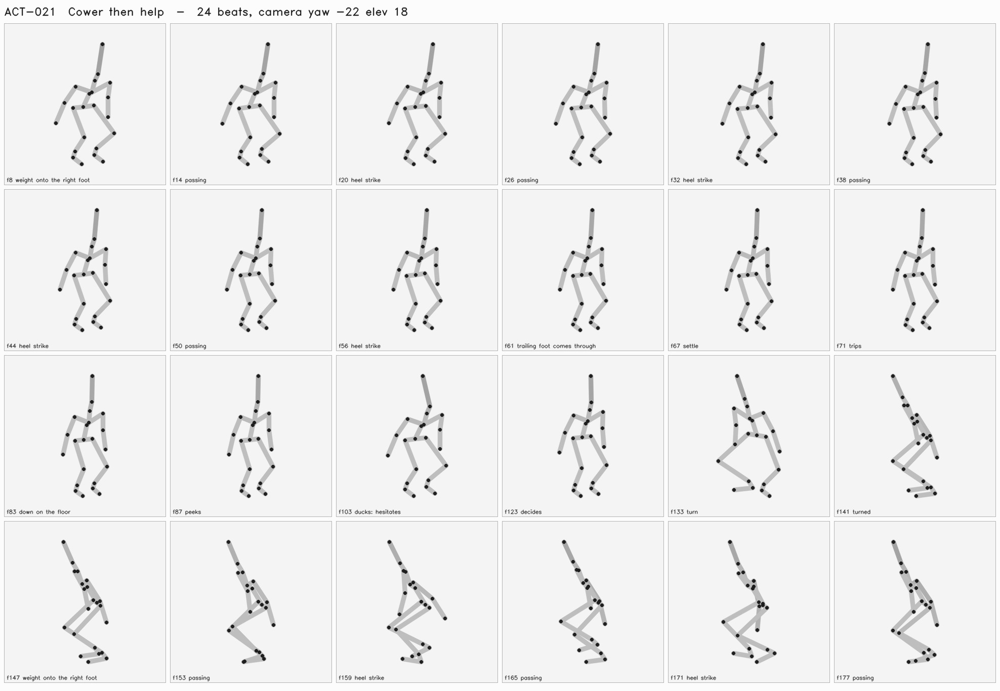

Hide from danger, notice another person exposed, emerge to help.
Passes when: Attention redirects before body commits; fear remains in helpful action.
| frame | who | beat |
|---|---|---|
| 8 | Shim | weight onto the right foot |
| 14 | Shim | passing |
| 20 | Shim | heel strike |
| 26 | Shim | passing |
| 32 | Shim | heel strike |
| 38 | Shim | passing |
| 44 | Shim | heel strike |
| 50 | Shim | passing |
| 56 | Shim | heel strike |
| 61 | Shim | trailing foot comes through |
| 67 | Shim | settle |
| 71 | Shim | trips |
| 83 | Shim | down on the floor |
| 87 | Bola | peeks |
| 103 | Bola | ducks: hesitates |
| 123 | Bola | decides |
| 133 | Bola | turn |
| 141 | Bola | turned |
| 147 | Bola | weight onto the right foot |
| 153 | Bola | passing |
| 159 | Bola | heel strike |
| 165 | Bola | passing |
| 171 | Bola | heel strike |
| 177 | Bola | passing |
| 183 | Bola | heel strike |
| 189 | Bola | passing |
| 195 | Bola | heel strike |
| 200 | Bola | trailing foot comes through |
| 206 | Bola | settle |
| 216 | Bola | turn |
| 224 | Bola | turned |
| 232 | Bola | passing |
| 238 | Bola | heel strike |
| 244 | Bola | passing |
| 250 | Bola | heel strike |
| 256 | Bola | passing |
| 262 | Bola | heel strike |
| 268 | Bola | passing |
| 274 | Bola | heel strike |
| 280 | Bola | passing |
| 286 | Bola | heel strike |
| 291 | Bola | trailing foot comes through |
| 297 | Bola | settle |
| 305 | Bola | passing |
| 311 | Bola | heel strike |
| 317 | Bola | passing |
| 323 | Bola | heel strike |
| 329 | Bola | passing |
| 335 | Bola | heel strike |
| 340 | Bola | trailing foot comes through |
| 340 | Shim | reaches for her |
| 346 | Bola | settle |
| 350 | Bola | takes his hand |
| 364 | Shim | weight over his feet |
| 393 | Bola | turn |
| 394 | Shim | turn |
| 402 | Bola | turned |
| 404 | Shim | turned |
| 411 | Bola | turn |
| 414 | Shim | turn |
| 420 | Bola | turned |
| 424 | Shim | turned |
| 426 | Bola | weight onto the right foot |
| 432 | Bola | passing |
| 434 | Shim | turn |
| 438 | Bola | heel strike |
| 444 | Bola | passing |
| 444 | Shim | turned |
| 450 | Bola | heel strike |
| 454 | Shim | turn |
| 455 | Bola | trailing foot comes through |
| 461 | Bola | settle |
| 464 | Shim | turned |
| 470 | Shim | weight onto the right foot |
| 471 | Bola | turn |
| 476 | Shim | passing |
| 479 | Bola | turned |
| 482 | Shim | heel strike |
| 487 | Bola | turn |
| 488 | Shim | passing |
| 494 | Shim | heel strike |
| 495 | Bola | turned |
| 500 | Shim | passing |
| 503 | Bola | turn |
| 506 | Shim | heel strike |
| 511 | Bola | turned |
| 512 | Shim | passing |
| 518 | Shim | heel strike |
| 519 | Bola | turn |
| 524 | Shim | passing |
| 527 | Bola | turned |
| 530 | Shim | heel strike |
| 535 | Bola | passing |
| 535 | Shim | trailing foot comes through |
| 541 | Bola | heel strike |
| 541 | Shim | settle |
| 547 | Bola | passing |
| 553 | Bola | heel strike |
| 559 | Bola | passing |
| 565 | Bola | heel strike |
| 571 | Bola | passing |
| 577 | Bola | heel strike |
| 583 | Bola | passing |
| 589 | Bola | heel strike |
| 595 | Bola | passing |
| 601 | Bola | heel strike |
| 606 | Bola | trailing foot comes through |
| 612 | Bola | settle |

Thresholds come from the spec's crash_lab_checks and are read by the verdict, not restated beside it. A check that did not run says so; a blank is not a pass.
new threat · injured partner · exit nearby